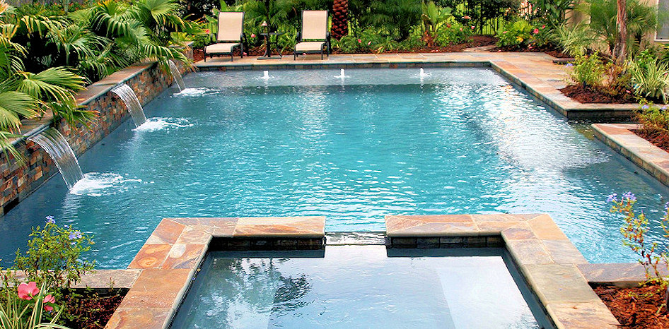
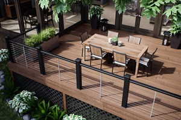

Architect costs can vary greatly, depending on the size of your project, what you want the architect to do and the individual architect’s fee structure. An architect may charge by the hour, by the square foot or by a percentage of the total cost of the project. These rates can vary by location, but at a minimum, you’ll need to spend $800 to $1,000 to hire an architect to review and approve blueprints and other construction documents if you need a licensed architect’s approval. Architects usually charge $80 to $150 per hour if you hire them on an hourly basis. If you hire a principal, who typically runs an architectural firm, expect to pay closer to $150 per hour. If you hire a junior architect, prices typically hover around $80 per hour. You may balk at the idea of paying an architect a percentage, as the architect is in a position to drive up the total cost of a project. However, you can address this concern by communicating your total budget before the project begins. An architect can help you stay within budget if they are in charge of selecting, negotiating and overseeing contractors and subcontractors.



TM & © 2018 Space Cube Architecture. All Rights Reserved.